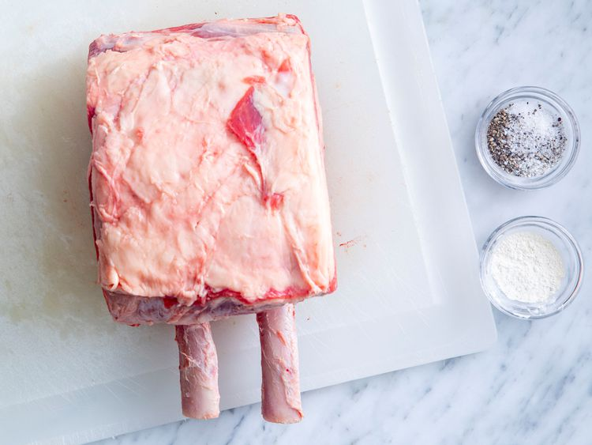
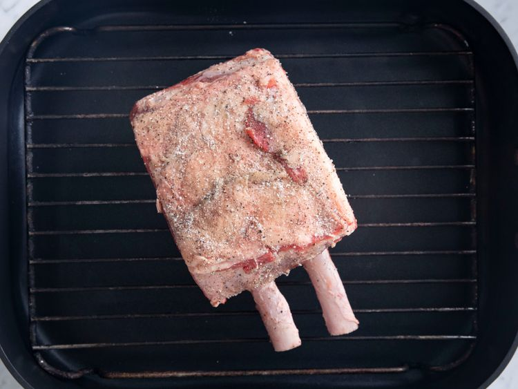
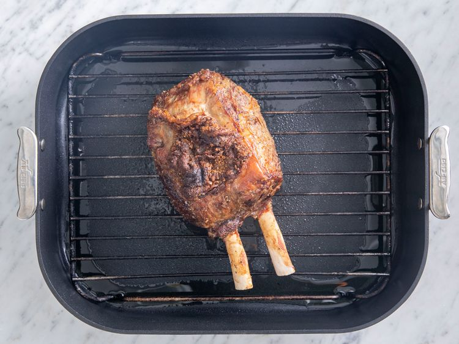
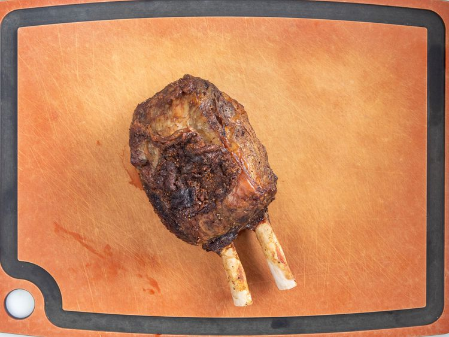
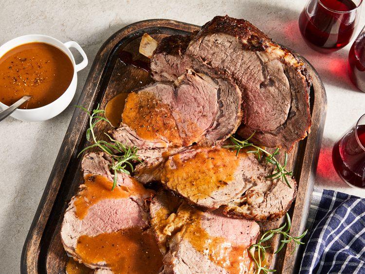

Rib Roast

How to Cook a Prime Rib Roast
Follow this rib roast recipe for a juicy and tender, succulent, standing rib roast that will make the perfect centerpiece for your holiday table! The key to perfectly cooked beef is to let your bone-in roast get to room temperature before cooking. This recipe is for well-done beef so cook yours for less time if you like your beef medium or medium-rare. Rib roast can be expensive, so this is a total splurge or special-occasion dish.
Though this rib roast recipe is incredibly impressive, it's surprisingly simple to make. You'll find the full, step-by-step recipe below:
Ingredients
- 1 (5-pound) beef standing rib roast, at room-temperature (let sit out for 1 hour before starting recipe)
- 2 teaspoons salt
- 1 teaspoon ground black pepper
- 1 teaspoon garlic powder
Steps
- Gather all ingredients. 
- Preheat the oven to 375 degrees F (190 degrees C). Place a rack in a roasting pan.
- Combine salt, pepper, and garlic powder in a small cup.
- Place room-temperature roast on the rack in the roasting pan with the fatty side up and the rib side on the bottom. Rub the seasoning onto the roast. 
- Roast for 1 hour in the preheated oven. Turn the oven off and leave the roast inside for 3 hours, without opening the door. 
- Turn the oven back on to 375 degrees F (190 degrees C) and reheat the roast for 30 to 40 minutes. The internal temperature should be at least 145 degrees F (62 degrees C).
- Remove from the oven and let rest for 10 minutes before carving. 
- Serve hot and enjoy! 
Back to Recipes